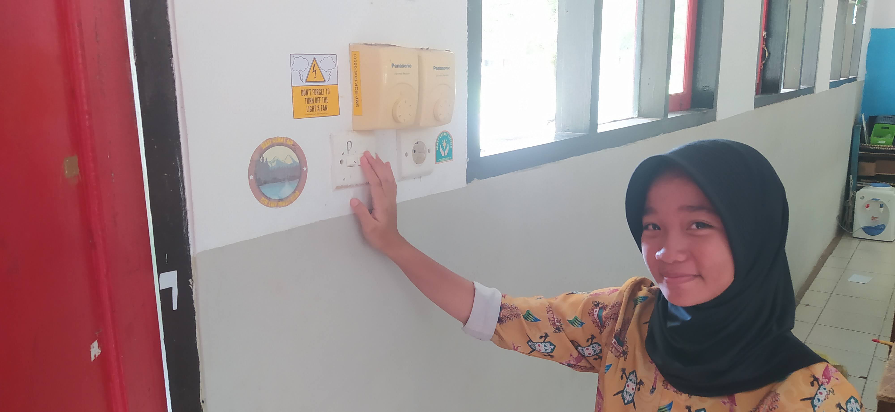

Kerusakan Ozon dan Pentingnya Mengurangi Jejak Karbon
Diposting pada 10 Oktober 2025

Salah satu penyebab kerusakan ozon adalah meningkatnya gas rumah kaca yang berasal dari aktivitas manusia. Misalnya, penggunaan kendaraan bermotor yang berlebihan, pembakaran sampah plastik, serta penggunaan energi listrik yang boros. Semua itu menambah “jejak karbon” atau jumlah emisi karbon yang kita hasilkan.
Mengurangi jejak karbon berarti berusaha mengurangi hal-hal yang bisa menambah polusi udara. Caranya bisa sederhana, seperti mematikan lampu saat tidak digunakan, berjalan kaki atau bersepeda untuk jarak dekat, membawa botol minum sendiri agar tidak membeli minuman kemasan plastik, dan menanam pohon.
SMP Tunas Agro sebagai sekolah Adiwiyata juga mengajak para siswanya untuk peduli terhadap isu ini. Beberapa kegiatan yang dilakukan antara lain workshop peringatan World Ozon Day bekerja sama dengan Agronomi PT Agro Indomas dan memberikan Reduce The Carbon Footprint Challenge kepada siswa siswi. Challenge sederhana seperti mematikan lampu jika tidak dipakai, menggunakan air dengan bijak, serta berrbagai kampanye hemat energi di kelas, diharapkan dapat mengajak para siswa untuk terbiasa menjaga lingkungan dan ikut serta mengurangi jejak karbon sejak dini.
Ingat, bumi ini adalah rumah kita bersama. Kalau kita menjaga lapisan ozon dan mengurangi jejak karbon, berarti kita sudah ikut melindungi masa depan agar tetap hijau, bersih, dan sehat.